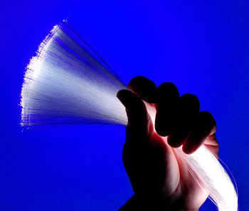
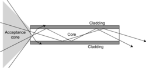
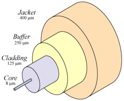

An optical fiber or fibre is a thin, transparent fiber, usually made of glass or plastic, for transmitting light. Fiber optics is the branch of applied science and engineering concerned with such optical fibers.
Optical fibers are commonly used in telecommunication systems, as well as in illumination, sensors, and imaging optics.
An optical fiber (American spelling) or fibre (British spelling) is a cylindrical dielectric waveguide that transmits light along its axis, by the process of total internal reflection. The fiber consists of a denser core surrounded by a cladding layer. For total internal reflection to confine the optical signal in the core, the refractive index of the core must be greater than that of the cladding. The boundary between the core and cladding may either be abrupt, in step-index fiber, or gradual, in graded-index fiber.
Fiber with large (greater than 10 μm) core diameter may be analyzed by geometric optics. Such fiber is called multi-mode fiber, from the electromagnetic analysis (see below). In a step-index fiber, rays of light are guided along the fiber core by total internal reflection. Rays that meet the core-cladding boundary at a high angle (measured relative to a line normal to the boundary) are completely reflected. The minimum angle for total internal reflection is determined by the difference in index of refraction between the core and cladding materials. Rays that meet the boundary at a low angle are refracted from the core into the cladding, where they are not useful for conveying light along the fiber. In this way, the minimum angle for total internal reflection determines the acceptance angle of the fiber, often reported as a numerical aperture. A high numerical aperture makes it easier to efficiently couple a transmitter or receiver to the fiber. However, by allowing light to propagate down the fiber in rays both close to the axis and at various angles, a high numerical aperture also increases the amount of multi-path spreading, or dispersion, that affects light pulses in the fiber.
In graded-index fiber, the index of refraction in the core decreases continuously between the axis and the cladding. This causes light rays to bend smoothly as they approach the cladding, rather than reflect abruptly from the core-cladding boundary. The resulting curved paths reduce multi-path dispersion because high angle rays pass more through the lower-index periphery of the core, rather than the high-index center. The index profile is chosen to minimize the difference in axial propagation speeds of the various rays in the fiber. This ideal index profile is very close to a parabolic relationship between the index and the distance from the axis.
Fiber with a core diameter narrower than a few wavelengths of the light carried, is analyzed as an electromagnetic structure, by solution of Maxwell's equations, as reduced to the electromagnetic wave equation. The electromagnetic analysis may also be required to understand behaviors such as speckle that occur when coherent light propagates in multi-mode fiber. As an optical waveguide, the fiber supports one or more confined transverse modes by which light can propagate along its axis. Fiber supporting only one mode is called single-mode or mono-mode fiber, while fiber that supports more than one mode is called multi-mode fiber. By the waveguide analysis, it is seen that the light energy in the fiber is not completely confined in the core, but, especially in single-mode fibers, a significant fraction of the energy in the bound mode travels in the cladding as an evanescent wave.
The common type of single-mode fiber has a core diameter of 8 to 10 μm. It is notable that the mode structure depends on the wavelength of the light used, so that this fiber actually supports a small number of additional modes at visible wavelengths. Multi-mode fiber, by comparison, is manufactured with a core diameter of 50 µm, 62.5 µm, or larger.
Some special-purpose optical fiber is constructed with a non-cylindrical core and/or cladding layer, usually with an elliptical or rectangular cross-section. These include polarization-maintaining fiber and fiber designed to suppress whispering gallery mode propagation.